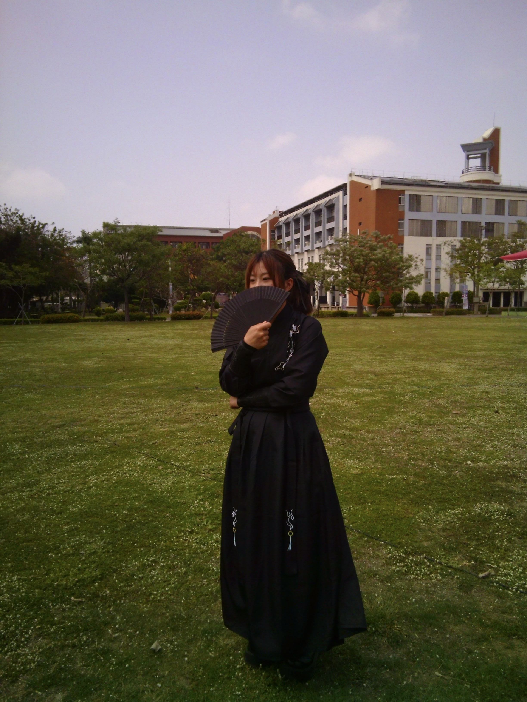
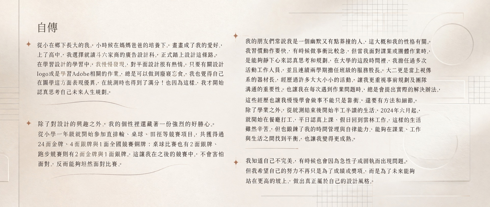
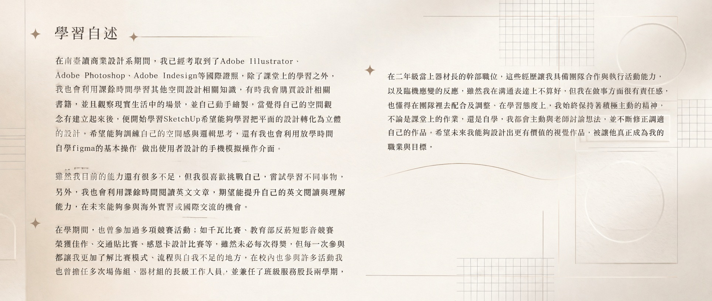
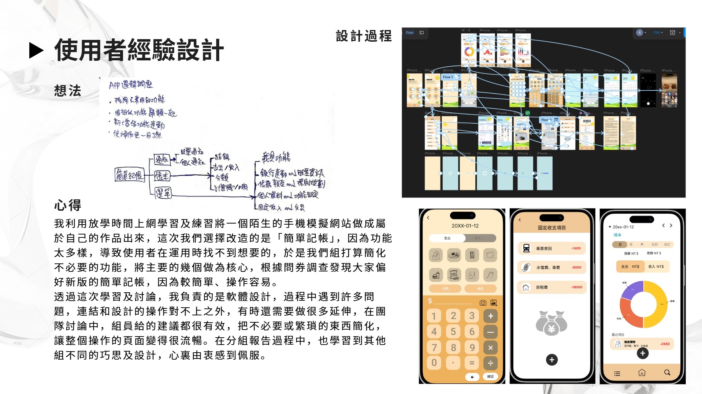
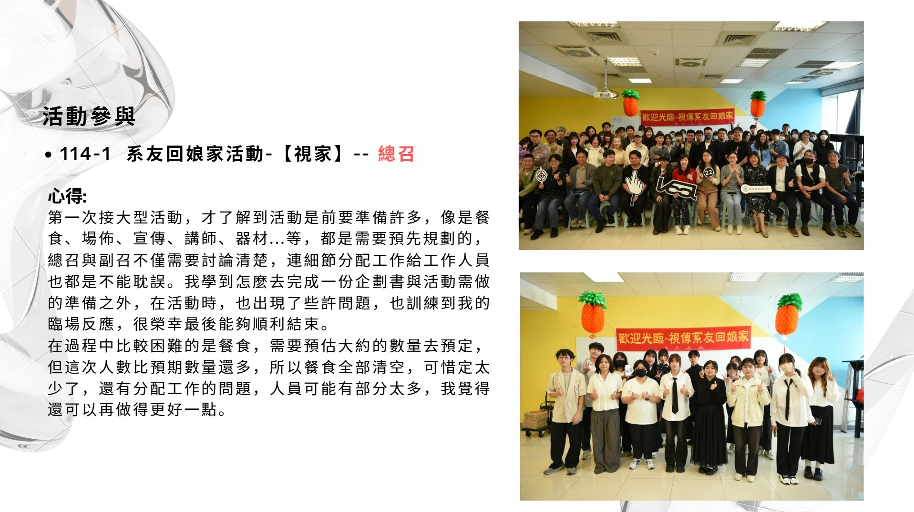
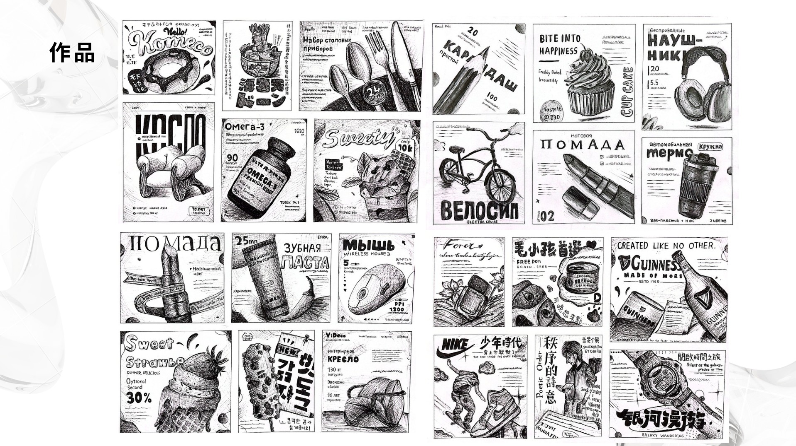

高中
斗六家商｜廣告設計科
開始接觸視覺設計與廣告製作，建立設計基礎，並在課程練習中培養對平面創作的興趣。
01 / ABOUT
從生活裡觀察細節，
再把靈感整理成設計。
我叫賴玫蓁，來自雲林，目前就讀南臺科技大學視覺傳達設計系商業設計組。從高中接觸廣告設計開始，我逐漸找到自己對平面設計與視覺表現的熱情。
我喜歡攝影，也樂於學習新的工具與方法。面對每一份作品，我會先理解需求、整理重點，再一步步完成兼具想法與易讀性的設計。

02 / EXPERIENCE
從設計基礎到實作，持續累積觀察、規劃與解決問題的能力。
高中
開始接觸視覺設計與廣告製作，建立設計基礎，並在課程練習中培養對平面創作的興趣。
大學・現在
商業設計組三年級。持續練習品牌、版面與使用者介面設計，並自主學習 Figma 與空間設計工具。
校園參與
擔任班級服務股長及系上器材長，協助活動籌備與器材管理，累積溝通協調和責任感。
持續精進
取得 Adobe 設計軟體相關證照，並透過課程專題與自主練習，拓展設計工具與表現方式。
CERTIFICATES & PRACTICE
Adobe 設計軟體相關證照。
PERSONAL DOCUMENTS


03 / SELECTED WORK
記錄練習的過程，也呈現每次嘗試的新想法。

重新整理記帳流程與畫面層級，讓日常收支紀錄更直覺。

參與活動規劃與現場執行，從流程安排中累積溝通協調與臨場應變經驗。

以線稿探索產品造型、插畫表現與版面編排的可能性。